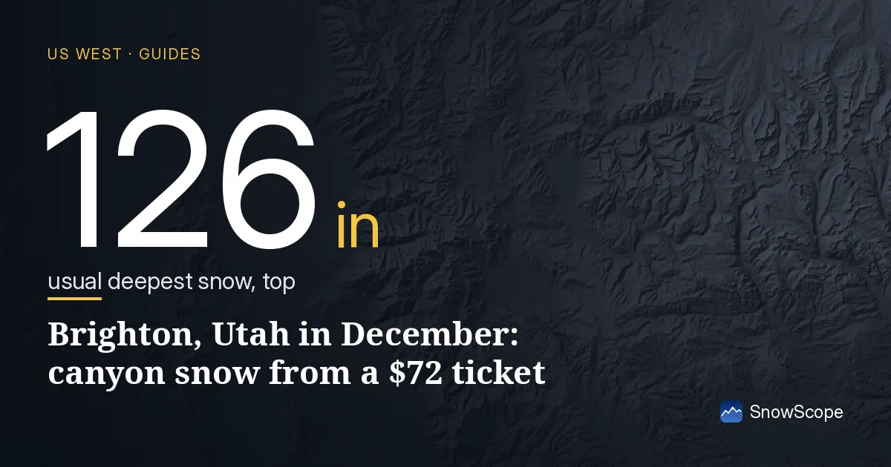
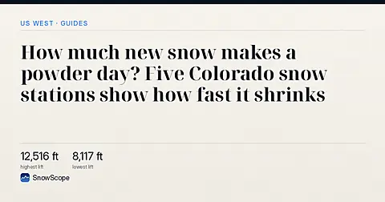

Brighton, Utah in December: canyon snow from a $72 ticket
Brighton is what you get when you skip the resort town and drive to the top of Big Cottonwood Canyon. On our snow history it is one of the safest December bets in Utah, and its online tickets start at $72 for those who buy early.
See the live snow forecast for Brighton Resort in the SnowScope appSnow depth, powder alerts and the 3D map, free.
High base, short drive
From Salt Lake City, Brighton is a canyon drive away, with a base around 8,750 ft (2,666 m) and lifts up to about 10,450 ft (3,185 m). On our mapping it has 8 lifts and about 29 mi (47 km) of runs. That base height is the whole story in December: the snow at the bottom here starts where many Utah resorts end.
Lasting snow usually reaches mid-mountain around early October in the middle of our 46 winters.

December, date by date
On 1 December, the typical depth at mid-mountain, about 9,600 ft (2,925 m), is 28 in (70 cm). By 15 December it is 37 in (94 cm), with 27 in (68 cm) at the base and 45 in (115 cm) at the top. On Christmas Day mid-mountain reaches 48 in (122 cm).
In 89 % of past winters mid-mountain had at least 20 in (50 cm) on 15 December, and in 98 % at least 10 in (25 cm). A lean December, one in ten, still gave 20 in (52 cm) there.

What it costs
Brighton prices its 2026/27 tickets dynamically. Winter day tickets start at $72, and the resort's advice is simple: buy early for the best rate. Holiday dates and late purchases cost more, and we only quote the starting price we could check.
For a longer trip, the Go Card loads three, four or five full-day tickets on one card, at up to 40 % off the full-day window rate. We could not read a dollar figure for it, so check the resort page for your dates.
Brighton versus Park City and Beaver Mountain
Park City is the famous neighbor over the ridge. On a typical 15 December its mid-mountain has 25 in (64 cm), and 72 % of winters had 20 in or more, clearly below Brighton's numbers. We did not compare its ticket prices here.
Beaver Mountain, the family hill near Logan, charges one flat $75 adult ticket, but its mid-mountain had 22 in (57 cm) on a typical 15 December, with 57 % of winters above 20 in. Brighton costs about the same if you catch a starting-price day, with more snow behind it.
Has early season changed?
Somewhat. In the first 15 winters of our record (1980-81 to 1994-95), mid-mountain held 50 in (128 cm) on a typical 15 December and every winter had 20 in or more. In the last 15 winters (2011-12 to 2025-26), the middle value was 27 in (68 cm) and 73 % passed 20 in. Last winter gave only 17 in (43 cm) on that date. December at Brighton is still reliable; it is just less of a sure thing than it used to be.
Tips for skiers
- Buy online as early as you can: the starting price goes to early buyers.
- Avoid the holiday stretch at the end of December if price matters most.
- Big Cottonwood Canyon has traction rules in storms: carry chains or use a 4WD with good tires, or take the bus.
- Look at the two-week outlook before booking a late flight: a dry December can thin the lower runs.
References and credits
- Brighton Resort, lift tickets 2026/27 (official) www.brightonresort.com/lift-tickets
- Beaver Mountain, tickets and passes 2026-2027 (official) www.skithebeav.com/tickets-and-passes/
- OpenSkiMap (mapped lifts and runs) openskimap.org/
- avalanche.org, US avalanche centers and forecasts avalanche.org/
About these numbers
Snow numbers: SnowScope snow history, 46 past winters (1980-81 to 2025-26) at the base, mid-mountain and top heights given, a reconstruction of past snow for an area corrected for height (ERA5-Land based; Snow_Hydro 1 km for Morocco), not the ski area's own snow reports. Current snow: the SnowScope snow map. Lifts, runs and heights: OpenSkiMap mapping. Prices: the official pages listed below, read on 13 November 2026; dynamic prices change with the date and with demand.
Official avalanche bulletins: Utah Avalanche Center
Cite this report
For research, teaching or the press: the numbers and charts are free to reuse under CC BY 4.0 with this citation.
SnowScope (2026), Brighton, Utah in December: canyon snow from a $72 ticket, https://snowscope.app/blog/en/2026/11/brighton-utah-december-lift-tickets-snow.html, accessed 2026-11-14
SnowScope (Atlas Labs). (2026, November 14). Brighton, Utah in December: canyon snow from a $72 ticket. SnowScope snow reports. https://snowscope.app/blog/en/2026/11/brighton-utah-december-lift-tickets-snow.html
BibTeX
@misc{snowscope2026brightonutahdecemberlift,
author = {{SnowScope (Atlas Labs)}},
title = {Brighton, Utah in December: canyon snow from a $72 ticket},
year = {2026},
month = nov,
howpublished = {\url{https://snowscope.app/blog/en/2026/11/brighton-utah-december-lift-tickets-snow.html}},
note = {Published 2026-11-14 15:27 UTC; accessed 2026-11-14}
}· CC BY 4.0 · Methods, data and tools →
Brighton Resort: snow and temperature by height, this winter vs last (tools) →
Follow Brighton Resort
Free: a message when fresh snow is coming, and the forecast every morning.
More snow reports

A storm on November 4 left 8 to 13 inches of new snow at five high Colorado stations near Aspen. Five days later, half of it was gone. What that means for powder days.

The snow is not done yet: we expect 13 in (34 cm) at Bear Valley, 13 in (34 cm) at Dodge Ridge and 13 in (33 cm) at Badger Pass by 16 November. A …